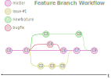

Git Feature Branch Workflow
The project work with Git requires a consistent workflow to apply changes to the Matlab project in a way that no broken source code affects the current state of the project. Therefore Git has the ability to work on new features, issues or bugs in the certain workflow which matches those requirements. This workflow is called Feature Branch Workflow. The workflow describes that for every change in the source code a new branch must be opened in the Git tree. The following changes are committed to the new branch and so that changing commits are not listed in the master branch of the Git tree and have no effect on the made work until the branch is merged back into the master branch. That makes it possible to work on several new features at a time and guarantees a functional working version of the project.
For a deeper understanding in example have a look at the description of Atlassian tutorial page of the Feature Branch Workflow. The listed Matlab help pages describe to use the embedded Matlab Git tooling to apply changes with branching merging.
Contents
See Also
Examples
- The master branch is created. Project starts with commit C0.
- One commit C1 is added to the master branch e.g. by adding .gitattributes.
- But there was an issue with that attributes declaration so a new branch is opened to solve that issue.
- On the same time a new feature must be established e.g. a new script or function. So a second branch is opened.
- Also a third for a small bug fix.
- Now the work at those three different task can be done in parrallel without affecting each other.
- Switch between the different branches by checkout the branch and commit the ongoing work into each branch for itself.
- If the work is done in a branch, the branch must be merged on the master branch. Git makes automated merge commits (C6, C7, C9) where the changes from the branches are integrated in master branch files.
- At this point it is possible that merging conflicts are raised. Those conflicts in the files must be solved manually.
- Just open a new branch for the next change, switch to it and commit the work until its done and the branch is ready to merge back into master
It is best practice to push all created local branches to a remote repository too! It completes the backup on the one hand and on the other it makes the ongoing work accessable to third.

Created on October 07. 2020 by Tobias Wulf. Copyright Tobias 2020.